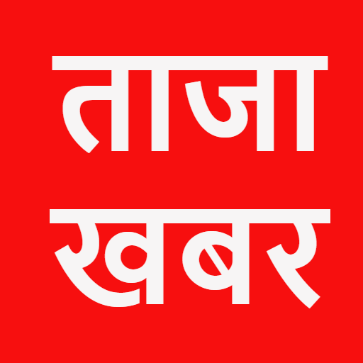

असरदार है उबले हुए नींबू का पानी
कबीर वाणी: भक्ति गेंद चौगान कि, भावे कोई ले जाय
बाबा केदार का आशीर्वाद लेकर बदरीनाथ धाम के लिए रवाना हुए प्रधानमंत्री
गुदगुदी: पत्नी ने बताई पति की परिभाषा
इस बार धनतेरस दो दिन,178 साल बाद बना गुरु और शनि का अद्भुत संयोग
आज देवभूमि में पीएम मोदी देंगे 3400 करोड़ की सौगात समेत टॉप 10 खबर
इन आठ शहरों में हुआ लॉन्च, जानें कैसे उठा सकते हैं इसका फायदा

#Ayodhya has rolled out a red carpet for Prime Minister #NarendraModi who is arriving in the holy city on Sunday evening to attend events at the #Deepotsav Mahotsav.
— IANS (@ians_india) October 23, 2022
(File image for representational purpose) pic.twitter.com/46Ds4vVfMC